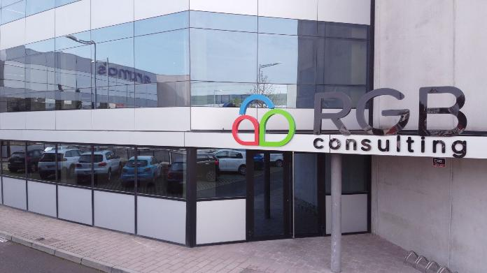

EXPERIENCIA EN PRACTIQUES
Practiques de grau mitjà
Vaig fer les practiques de GM a la UDL de Lleida. Vaig estar els primers dies al campus de Cappont i després al campus de medicina.
Vaig fer inventari (mirar quins ordinadors feia temps que no s'utilitzaven des d'un programa que tenien i després treure les peces d'aquells ordinadors per si
es podien fer anar en uns altres o simplement per esborrar les dades que tenien, també donar d'alta nous ordinadors, ficar-lis l'etiqueta amb els números que li
correspon...), resolució d'incidències, hardware i instal·lació de sistemes.
Practiques de grau superior
Les pràctiques de grau superior les vaig fer en l'empresa de RGB, també a Lleida. Vaig fer temes relacionats amb migració de ERP i
pàgines web (amb html, css, jv i php). Gràcies a aquestes pràctiques vaig aprendre noves coses i també vaig millor les meves habilitats,
gràcies a que el treball era en equip i ens ajudàvem entre nosaltres. I en el tema de pàgines web vaig adquirir experiència i vaig aprendre a millorar l'experiència
d'usuari.

EXPERIENCIA LABORAL
He treballat en dues empreses, una d'elles és en la que vaig fer les pràctiques de grau superior, res més acabar les pràctiques
em van contractar i vaig treballar durant 5 anys en l'empresa. En ella, vaig contribuir en la millora de sistemes ERP utilitzant Java, per a la implementació
de funcionalitats noves i optimització de processos. Igual que a les pràctiques, també vaig estar millorant la interfície d'usuari en diferents pàgines web i aplicacions.
La segona empresa és l'actual, es diu Indra. En ella estic fent ciberseguretat per a ciutadans, organitzacions i infraestructures (per exemple
centres nuclears, sistemes de control, sistemes de distribució d'aigua...).